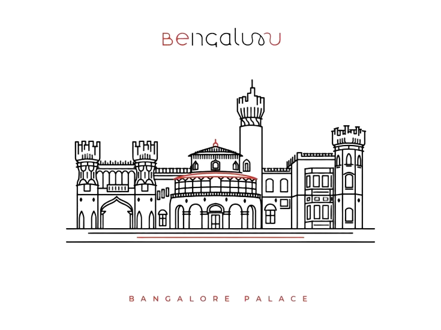
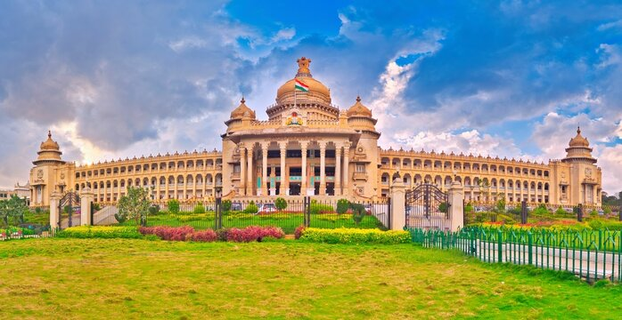
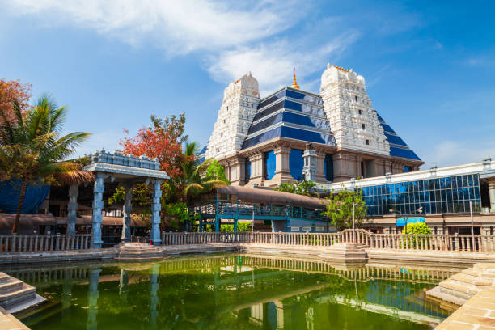
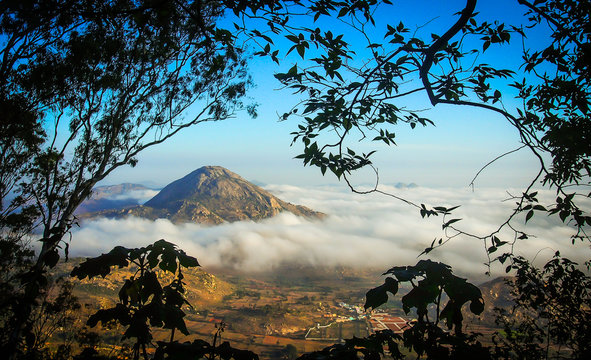

BANGALORE
The vibrant metropolis of Bangalore, holds the distinction of being the capital of
Karnataka, India's third-largest city. Earning the moniker "The Garden City" for its year-round pleasant
climate, Bangalore offers a delightful escape. Its rich history stretches back to the 9th century CE, with a
pivotal role played by Kempegowda, a chieftain credited with founding the city in the 16th century. His
legacy lives on in the city's layout and historical landmarks.
In the modern era, Bangalore has become a leading force in India's high-tech industry, aptly named the
"Silicon Valley of India." The city attracts numerous information technology (IT) companies, aerospace and
defense industries, and biotechnology firms, making it a bustling hub for innovation and progress.
Beyond its technological prowess, Bangalore offers a vibrant cultural scene. Visitors can experience
traditional festivals, captivating music and dance performances, and a unique blend of Kannada, Telugu,
Tamil, and Hindi influences. For history buffs, architectural marvels like the neo-Dravidian Vidhana Soudha
and the majestic Bangalore Palace stand as testaments to the city's past. Nature lovers can find solace in
the sprawling Cubbon Park, one of the city's largest green spaces.

BANGALORE'S CLIMATE
Bangalore, aptly nicknamed "The Garden City," boasts a year-round
climate that's both pleasant and comfortable. Unlike many Indian cities that experience scorching summers and
harsh winters, Bangalore enjoys a more moderate temperature range. Summers, typically from March to May, are
warm with average highs between 26°C (79°F) and 32°C (90°F). Winters, on the other hand, are mild with
temperatures averaging between 16°C (60°F) and 24°C (75°F) from November to February. This moderate climate is
attributed to Bangalore's elevation on the Deccan Plateau, which keeps it cooler than some surrounding areas.
NEARBY TOURIST PLACES FOR VISIT:
Vidhana Soudha:
Bangalore's crown jewel, the Vidhana Soudha, is an architectural marvel that embodies the city's rich heritage
and modern spirit. This neo-Dravidian masterpiece, completed in 1956, serves as the seat of the Karnataka State
Legislature. Its imposing white granite facade, adorned with intricate carvings and towering domes, is a sight
that leaves a lasting impression.
Beyond its visual grandeur, the Vidhana Soudha is a testament to Indian craftsmanship. Over 5000 skilled
laborers and artisans meticulously crafted the building, showcasing traditional techniques alongside modern
architectural concepts. Inside, the Vidhana Soudha houses the legislative chambers and government offices, all
designed for functionality and aesthetics.
Standing tall amidst sprawling gardens, the Vidhana Soudha is more than just a government
building. It's a symbolic landmark that reflects Bangalore's evolution from a historical city to a thriving
modern metropolis.This transformation is further echoed in the building's design. The neo-Dravidian style pays
homage to Bangalore's historical roots, while the incorporation of modern architectural concepts symbolizes
the city's forward-thinking spirit. The Vidhana Soudha thus serves as a bridge between Bangalore's illustrious
past and its dynamic present.
For more detailed information for location of School of Engineering & Technology CMR
University, Bangalore Karnataka from Vidhana Soudha.
Click here

Lal Bagh Botanical Garden:
Lal Bagh Botanical Garden Sprawling across 240 acres in the heart of Bangalore, Lal Bagh Botanical Garden is a
horticultural paradise. Established in the 18th century, it boasts a rich history and a staggering collection of
over 1,850 plant species. This verdant oasis offers something for everyone. Wander through meticulously landscaped
lawns boasting vibrant flowerbeds and towering trees, some centuries old. Immerse yourself in the tranquility of
the lotus pools, or marvel at the architectural wonder of the historic glasshouse, modeled after London's Crystal
Palace. Lal Bagh also features themed gardens, like the bonsai collection, showcasing miniature masterpieces of
horticulture. Whether you're a nature enthusiast, a history buff, or simply seeking a peaceful escape, Lal Bagh
Botanical Garden provides an unforgettable experience, solidifying its place as a jewel in Bangalore's crown.This
botanical haven also hosts events throughout the year, including its renowned flower shows – a dazzling display of
color and creativity. For those seeking historical insights, guided tours unveil the stories behind the various
plant collections and architectural features. Lal Bagh isn't just a static exhibit; it's a vibrant space for
educational programs, fostering a love for nature and environmental awareness in visitors of all ages. So, take a
leisurely stroll, explore its diverse flora, and discover the magic that unfolds within the verdant embrace of Lal
Bagh Botanical Garden.
For more detailed information for location of School of Engineering & Technology CMR
University, Bangalore Karnataka from Lal Bagh Botanical Garden
Click here

Bangalore Palace:
Bangalore Palace, an architectural gem in the heart of Bangalore, is renowned for its grandeur and historical
significance. Built in 1878 by Chamaraja Wodeyar, the palace draws inspiration from England's Windsor Castle,
featuring a unique blend of Tudor and Gothic architectural styles. The exterior is characterized by fortified
towers, battlements, and elegant turrets, while the interior boasts intricate wood carvings, elegant furniture,
and exquisite paintings. The palace is surrounded by expansive gardens that host various events, including
concerts and cultural shows. Over the years, Bangalore Palace has served as a royal residence and now stands as a
testament to the city's rich heritage, offering visitors a glimpse into the opulent lifestyle of the Wodeyar
dynasty. Its regal charm and historical allure make it a must-visit landmark in Bangalore.
Bangalore Palace, an iconic symbol of the city's regal past, stands majestically amidst sprawling gardens in the
heart of Bangalore. Constructed in 1878 by King Chamaraja Wodeyar, the palace is a striking example of Tudor and
Gothic Revival architecture, inspired by England's Windsor Castle. The exterior of the palace is adorned with
fortified towers, battlements, and turrets, giving it a fairytale-like appearance.
Inside, the palace is a treasure trove of art and history, with intricate wood carvings, elegant furniture, and an
extensive collection of paintings and photographs that narrate the story of the Wodeyar dynasty. The opulent
interiors feature elaborate chandeliers, stained glass windows, and Victorian-style furniture, reflecting the
grandeur and luxury of a bygone era..
For more detailed information for location of School of Engineering & Technology CMR
University, Bangalore Karnataka from Bangalore Palace
Click here

ISKCON Temple:
The ISKCON Temple in Bangalore, officially known as the Sri Radha Krishna Temple, is a prominent spiritual
landmark dedicated to Lord Krishna. Located in Rajajinagar, it is one of the largest ISKCON temples globally
and a significant cultural and religious hub in Bangalore. The temple's architecture blends traditional
South Indian temple style with modernity, featuring intricately carved stone pillars, stained glass windows
depicting Krishna's pastimes, and a majestic central altar adorned with beautiful deities of Radha and
Krishna. The temple complex also includes a Vedic museum, preaching seminars, and a vegetarian restaurant
serving delicious prasadam (sanctified food). Devotees and visitors alike flock to ISKCON Bangalore to
participate in daily rituals, attend spiritual discourses, and experience the serene ambiance of devotion
and worship.ISKCON Bangalore is also known for its charitable initiatives, such as providing free meals to
underprivileged children through the Akshaya Patra program, which serves nutritious mid-day meals in local
schools. The temple's cultural center organizes educational programs on ancient Indian philosophy, yoga, and
meditation, catering to both spiritual seekers and the intellectually curious.
Visitors to ISKCON Bangalore can explore its serene gardens, attend classes on
Bhagavad Gita and other scriptures, and engage in spiritual practices such as mantra meditation and kirtan
(devotional chanting). The temple's architecture and ambiance create an atmosphere conducive to
contemplation and inner peace, making it a cherished destination for both locals and tourists seeking a
deeper connection with spirituality and the teachings of Lord Krishna.
For more detailed information for location of School of Engineering & Technology CMR
University, Bangalore Karnataka from ISKCON Temple.
Click here

Nandi Hills :
Nandi Hills, located about 60 kilometers north of Bangalore, is a popular hill station and tourist
destination known for its scenic beauty and pleasant climate. Perched at an altitude of around 1,478
meters above sea level, Nandi Hills offers breathtaking panoramic views of the surrounding countryside,
making it a favorite spot for sunrise and sunset enthusiasts. The hill is named after the ancient Nandi or
bull statue that sits atop the Yoga Nandeeshwara Temple, a historic temple dedicated to Lord Shiva. Apart
from its natural beauty, Nandi Hills also attracts visitors with its trekking trails, paragliding
opportunities, and historic sites such as Tipu Sultan's summer retreat and Tipu's Drop, a cliff from where
prisoners were once thrown to their demise. Whether for a day trip or a weekend getaway, Nandi Hills
provides a refreshing escape from the hustle and bustle of city life, offering tranquility and stunning
vistas to all who visit.
ChatGPT
Nandi Hills has a rich historical significance dating back to the Chola period, when it was known as
Ananda Giri, meaning "Hill of Happiness." Over the centuries, it served as a strategic fortress for
various rulers including the Cholas, Hoysalas, and the Vijayanagara Empire. Its cool climate and
picturesque landscapes have attracted not only nature lovers but also adventure enthusiasts seeking
activities like cycling, biking, and camping. The region around Nandi Hills is also known for its
vineyards, adding a touch of serenity and flavor to the overall experience. Whether exploring ancient
temples, indulging in outdoor adventures, or simply soaking in the peaceful ambiance, Nandi Hills
remains a cherished destination for locals and tourists alike, offering a glimpse into Karnataka's rich
cultural and natural heritage
For more detailed information for location of School of Engineering & Technology
CMR University, Bangalore Karnataka from Nandi Hills.
Click here

By Railway
Bangalore, known as the Silicon Valley of India, boasts a well-developed railway network that plays a crucial
role in the city's connectivity and transportation infrastructure. The city is served by several major railway
stations, the most prominent being Krantivira Sangolli Rayanna (Bangalore City) Railway Station. This station
is a bustling hub, connecting Bangalore to various parts of India through an extensive network of rail routes.
Other important stations include Yeshwanthpur Junction, Bangalore Cantonment, and Krishnarajapuram, each
facilitating the movement of thousands of passengers daily.
To travel from Krantivira Sangolli Rayanna (Bangalore City) Railway Station to CMR University, you'll
typically follow these steps:
- Walk to Majestic Metro Station.
- Take the Purple Line to Baiyappanahalli.
- Take a cab/auto to CMR University
For Train Booking and Enquiry
By AIR
Kempegowda International Airport (BLR) is the primary gateway to Bangalore, located about 40 kilometers north
of the city center. As one of India's busiest airports, it offers extensive domestic and international
connectivity. Major Indian cities like Delhi, Mumbai, Chennai, Hyderabad, Kolkata, Pune, and Ahmedabad are
well-linked to Bangalore via frequent flights. Internationally, direct flights connect Bangalore to
destinations such as Dubai, Singapore, London, Frankfurt, New York, San Francisco, Paris, and Bangkok. The
airport features separate terminals for domestic and international flights, equipped with modern amenities
including duty-free shops, lounges, restaurants, free Wi-Fi, baggage services, and currency exchange
facilities.
Travelers can reach the city center using various transportation options. Taxis and app-based cabs like Uber
and Ola offer a convenient and direct route, typically taking 45 minutes to an hour depending on traffic. BMTC
(Bangalore Metropolitan Transport Corporation) operates Vayu Vajra airport shuttle buses that provide
economical connections to different parts of the city. Car rental services are also available for those who
prefer to drive themselves.
For Flight
Booking and Enquiry
By Road
Bangalore enjoys robust road connectivity facilitated by a network of national and state highways, making it a
pivotal hub for road travel in South India. National Highways such as NH 44, NH 75, and NH 48 play crucial
roles in connecting Bangalore to major cities and regions. NH 44 links Bangalore with Hyderabad, Chennai,
Kanyakumari, and Jaipur, while NH 75 connects it to Mangalore and other parts of Karnataka. NH 48 further
enhances connectivity to Mangalore, Chennai, and Jaipur
Traveling by road from Jaipur to Bangalore is a long but scenic journey, covering roughly 1,600 kilometers and
taking approximately 24 to 30 hours. The most common route utilizes National Highway 48 (NH48), offering
generally good road conditions. You'll start by heading west from Jaipur towards Delhi, often using bypasses
on NH48 or NH248 to avoid city traffic. After Delhi, continue south on NH48, passing through Gurugram
(Gurgaon). Further down the highway, you'll encounter Kota in Rajasthan and Indore, a major city in Madhya
Pradesh. NH48 then takes you through the western part of Maharashtra before reaching the Karnataka border. The
journey continues through Belgaum, a prominent city in Karnataka, before finally reaching your destination,
Bangalore. Remember, this is a general route, and depending on your specific itinerary, you might encounter
state highways or smaller roads. Consulting a GPS navigation app or detailed maps before your trip is
advisable for the latest road information and potential detours.
Transport Facilities in Bangalore
Bangalore, known as India's Silicon Valley, boasts a robust transport infrastructure catering to its
burgeoning population and thriving business sector. The city is well-connected by a network of roads, with
major highways like the Outer Ring Road and the NICE Road facilitating smooth intra-city and inter-city
travel. Public transport is primarily managed by the Bangalore Metropolitan Transport Corporation (BMTC),
which operates an extensive fleet of buses covering almost every corner of the city and its suburbs. The
Bangalore Metro, inaugurated in 2011, offers a rapid transit system with two operational lines (Green Line
and Purple Line) spanning key areas, providing a convenient alternative to road transport. Additionally,
auto-rickshaws and taxis are widely available for short-distance travel, complementing the public transport
network. Bangalore also supports a burgeoning cycling community with dedicated lanes and bike-sharing
initiatives, promoting eco-friendly commuting options. With ongoing infrastructure projects aimed at further
enhancing connectivity, Bangalore continues to evolve as a dynamic hub with diverse transport solutions
catering to its residents and visitors alike.
In addition
ChatGPT
Bangalore features various initiatives for sustainable mobility, including the Namma Cycle bike-sharing
program and an integrated ticketing system for seamless public transport. The Kempegowda International
Airport connects the city to major destinations, complemented by plans for suburban rail and high-speed rail
projects to enhance connectivity. Bangalore's ongoing commitment to expanding transport facilities
underscores its growth as a prominent Indian metropolis.


.png)
.png)
.png)
.png)
.png)